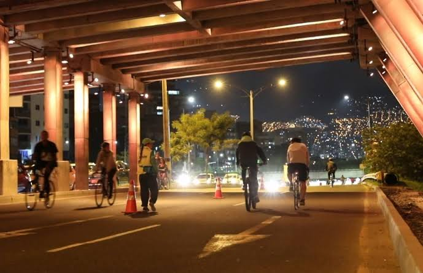

Nivel IntermedioRuta Alumbrados & Miradores
- Distancia 18 km
- Duración 2.5 horas
- Punto de encuentro Parque Poblado
Catálogo visual de los botones y la tarjeta de ruta construidos para Rueda Libre Nocturna sin divs.

Nivel Intermedio